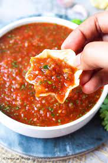

lasagna

Vibrant, fresh homemade salsa with a hint of spice is the perfect condiment for snacking and serving at nearly any get-together. This spicy Mexican-style salsa recipe is easy to make with the help of a food processor.
Follow my step-by-step instructions, photos and video to quickly whip up batch of a zesty 5 minute tomato salsa for your next party!
ingredients:
- chopped tomatoes
- chopped onions
- chopped green chillies
- serrano pepper
- coriander leave
cooking process
- To make the best and easiest tomato salsa from scratch, first prepare the produce: Rinse and roughly chop 2 medium tomatoes, 1 medium onion, 1 to 2 green chilies and some coriander (cilantro) leaves.
- You can remove the seeds from the tomatoes and green chilies if you want a smoother consistency.
Transfer the chopped ingredients to a food processor.
- Next add ¼ teaspoon cumin powder, ¼ teaspoon black pepper, and salt to taste. For even more spice, feel free to add a bit of cayenne or red chili powder in place of the black pepper.
- Then add 2 teaspoons of lemon juice, or more if you like a tangier taste.
- Close the lid and process into a fine, slightly-chunky consistency. The perfect restaurant-style tomato salsa does not have large bits in it, but also isn’t too smooth. I definitely recommend pulsing bit by bit to make sure you don’t over process.